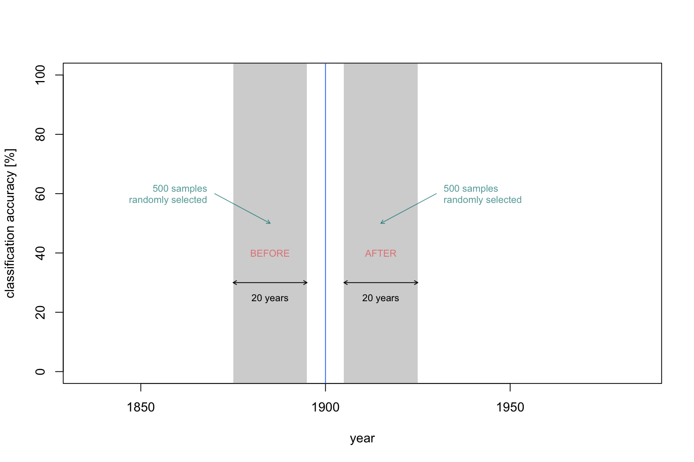
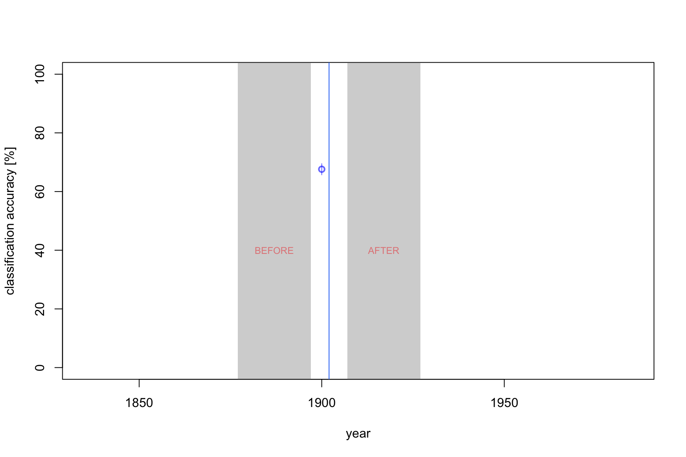
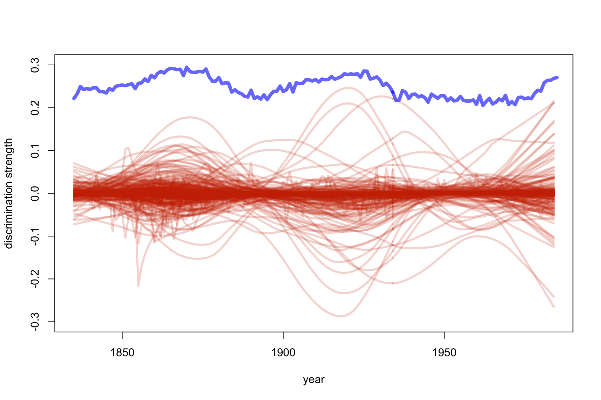
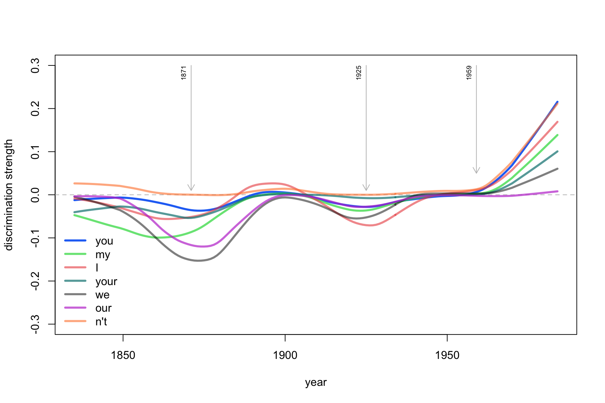

Words that Have Made History, or Modeling the Dynamics of Linguistic Changes
Maciej Eder
Institute of Polish Language (Polish Academy of Sciences)
Digital Humanities 2018, Mexico City, 29 June 2018
Maciej Eder
Maciej Eder
Institute of Polish Language (Polish Academy of Sciences)
Digital Humanities 2018, Mexico City, 29 June 2018
One of the most interesting aspects of language development – overlooked in a vast majority of the existing studies – is the question of the dynamics of linguistic changes. Presumably, one should expect epochs of substantial stylistic drift followed by periods of stagnation, rather than purely linear trends.





Figure 3: A sequence of Nearest Shrunken Classification tests on 333 English texts: cross-validated results for different vectors of most frequent POS-tag 2-grams
In Fig. 3, the classification accuracy rates for the aforementioned corpus of 333 English texts were shown (POS-tag 2-grams, NSC classifier). As one can observe, the scores obtained for the period 1750–1850 are only slightly higher than the baseline, betraying no revolutionary changes in this period. Later, however, the stylistic drift accelerates, reaching 70% of correctly recognized test samples.


## [1] "the" "and" "week" "that" "'s"
## [6] "last" "is" "be" "of" "it"
## [11] "we" "i" "to" "was" "mr."
## [16] "our" "my" "been" "not" "u.s."
## [21] "you" "new" "upon" "there" "has"
## [26] "says" "war" "york" "this" "n't"
## [31] "will" "s" "which" "for" "had"
## [36] "very" "have" "said" "are" "in"
## [41] "city" "made" "me" "a" "president"
## [46] "her" "us" "she" "his" "by"
## [51] "united" "or" "at" "but" "q!"
## [56] "party" "committee" "your" "so" "as"
## [61] "street" "today" "men" "would" "with"
## [66] "about" "heart" "do" "any" "'d"
## [71] "out" "all" "if" "great" "army"
## [76] "up"



in this paper we used a set of tailored stylometric methods to assess the question of language change over time. Our chosen techniques proved to be useful indeed; the further research will focus on tracing the very linguistic features that were responsible for the observed change. However, an important question has to be asked here: is it a change of Saussurean langue what we track with our approach, or rather the change of parole. Obviously, if texts written earlier can be separated from texts written more recently, they must share some features common for a given stage of language development. However, it is not clear if an observed change is due to, say, literary taste of the epoch or, if we face an actual change in the system here. Theoretically, the former and the latter are possible, as well as both answers together. It is also very likely that the change takes place in between: in the norm in the sense proposed by Coseriu (1958). Still there are no means to answer this question with any stylometric method, what for a linguist might be seen as a drawback. However, the proposed method informs the linguist about the fact of change, which takes place not only in lexis but also in syntax; about the speed of change and, above all, about the points where this speed accelerates.
This research is part of project UMO-2013/11/B/HS2/02795, supported by Poland’s National Science Centre.